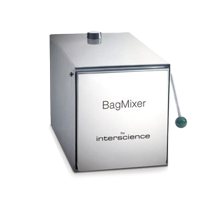
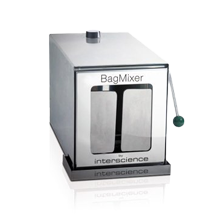
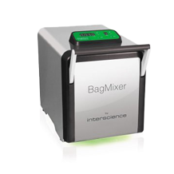
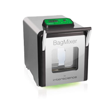

.png)
針對固態樣本的前處理BagMixer 是非常高效的實驗室均質鐵胃機。
只要使用一個均質袋，即可保證在 60 秒內達到最佳的微生物樣品提取效果，同時避免所有交叉污染的風險。
MiniMix 100 是專門為小型樣品設計的鐵胃均質機。具有可調節的葉片，讓均質效果更精確有效。
配件：電源線、說明書、安全滴水盤*、過濾均質袋（*僅適用於 MiniMix 100 W CC)
| MiniMix 100 | P CC | W CC | |
|---|---|---|---|
| 最佳處理量 | 5 - 80 毫升 | ||
| 電源供應 | 100-127V~/220-240V~ 50-60Hz | ||
| 尺寸(寬x長x高) | 20 x 37.5 x 20 公分 | ||
| 重量 | 12 公斤 | 11.8 公斤 | |
| 產品型號 | 011 230 | 013 230 | |
BagMixer 400 全球實驗室銷量最好，針對微生物分析最有效的實驗室均質鐵胃機。
配件：電源線、說明書、安全滴水盤*、過濾均質袋（*BagMixer 400 P選配)
|  |  |

|
 |  | |
|---|---|---|---|---|---|
| 型號 | BagMixer 400 P | BagMixer 400 W | BagMixer 400 CC | BagMixer 400 S | BagMixer 400 SW |
| 主要特色 | 必要性功能 | 觀察窗 | Click & Clean | 超靜音混合 | 觀察窗與液體感應器 |
| 全不銹鋼機身 | ✔️ | ✔️ | ✔️ | ✔️ | ✔️ |
| 觀察窗 | - | ✔️ | ✔️ | - | ✔️ |
| 多功能 數位顯示器 |
- | - | ✔️ | ✔️ | ✔️ |
| 可調整混合力度 (專利) |
- | - | ✔️ | ✔️ | ✔️ |
| 可調整攪拌葉片 Click & Clean （專利） |
- | - | ✔️ | ✔️ | ✔️ |
| 超級靜音 | - | - | - | ✔️ | ✔️ |
| 全方位存取系統 (專利) |
- | - | - | ✔️ | ✔️ |
| 液體感應器 (專利) |
- | - | - | - | ✔️ |

JumboMix 3500 實驗室鐵胃均質機，能快速混合大量樣品，適合微生物學的多種應用。
配件：電源線、說明書、安全滴水盤*、過濾均質袋（*僅適用於JumboMix 3500 VW 和 JumboMix 3500 WarmMix ）

| JumboMix 3500 | VP | VW | WarmMix | ||
|---|---|---|---|---|---|
| 最佳 處理量 |
200 - 3500 毫升 | ||||
| 電源供應 | 100-127V~/220-240V~ 50-60Hz | ||||
|
尺寸 (寬×長×高) |
51.8 x 47 x 47 公分 | 63 x 50 x 47 公分 | |||
| 重量 | 53.2公斤 | 50.2公斤 | 63公斤 | ||
| 產品型號 | 031 230 | 032 230 | 033 230 | ||
.jpg)
.jpg)
.jpg)
.jpg)
.jpg)
.jpg)